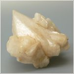

Название камня адуляр. Призрачный неверный свет Луны, бездна вечернего неба, зыбкое колебание горного воздуха скрыты в этом камне. Свое имя он получил по названию горного массива Адула в Щвейцарии, где были впервые найдены его кристаллы.
Адуляр относится к магматическим глубинным горным породам. По составу камень является алюмосиликатом калия K[AlSi3O8]. В природе он встречается в виде призматических кристаллов или зернистых масс. Адуляр - это прозрачная или полупрозрачная разновидность полевого шпата. Наиболее интересен так называемый лунный камень-отсвечивающий голубым сиянием. Это красивое таинственное свечение связано с закономерно расположенными в виде тончайших слоев микровростками другого кристалла-альбита. Чем тоньше эти слои, тем ярче и изысканнее чудесное голубое мерцание. Твердость по шкалее Мооса соответствует 6.
Образуется адуляр при кристализации силикатного расплава в глубинах Земли при температуре 650-700 градусов по Цельсию. Его красивые прозрачные кристаллы растут также из горячих водных растворов, богатых кремнеземом и калием, в трещинах горных пород. Известны вкрапления лунного камня в вулканических горных породах.
Адуляр находят вместе с другими самоцветами в галечниках на острове Шри-Ланка. К сожалению, теперь месторождения Шри-Ланки истощились. В Южной Индии обнаружены разновидности полевого шпата со звездчатым эффектом. В 1958 г. в речных галечниках окрестностей города Оливера (штат Виргиния, США) были открыты лунные камни, по качеству близкие к шри-ланкийским. Великолепные адуляры добывают в Бирме. Встречается адуляр на Мадагаскаре и в Танзании. Минерал нередко находят в слабо метаморфизованных породах на острове Северный в Новой Зеландии.
Каталог минералов